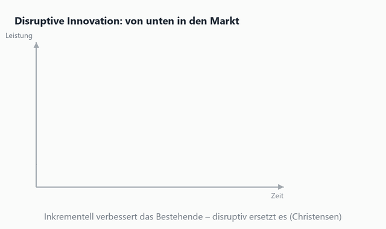
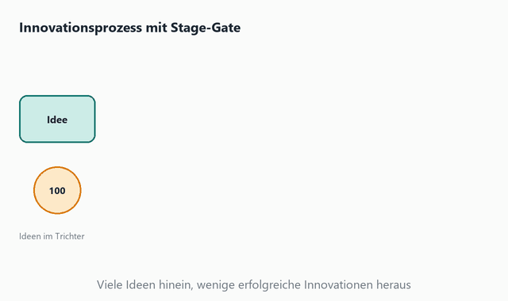
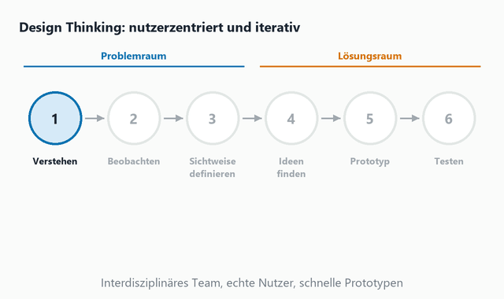
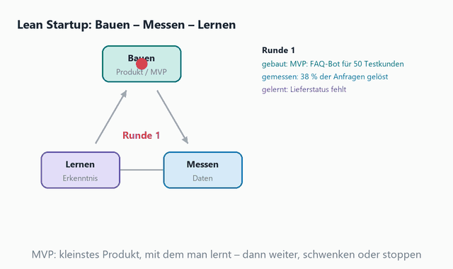
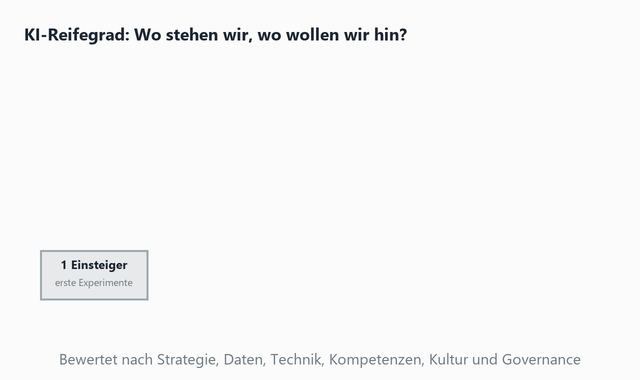
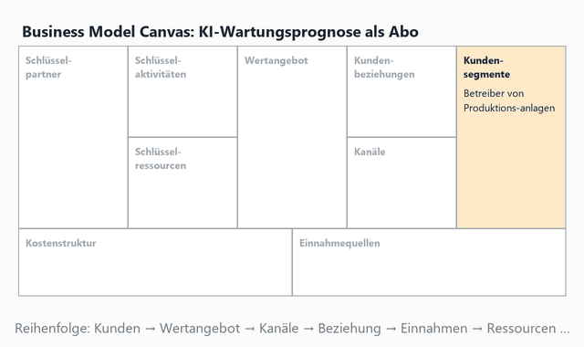
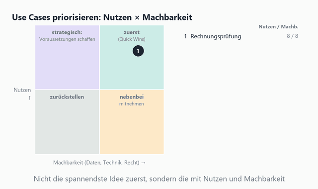
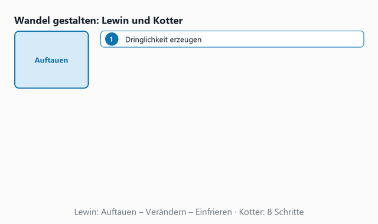

KI ist nur dann ein Gewinn, wenn aus Ideen funktionierende Lösungen werden – und wenn Menschen sie nutzen. In diesem Modul lernen Sie, wie Unternehmen Innovationen systematisch steuern (Stage-Gate, Design Thinking, Lean Startup), wie man ein digitales Zielbild mit Geschäftsmodell und Datenstrategie entwickelt, Use Cases priorisiert und den Wandel mit Change Management begleitet.
Das Smartphone war mehr als ein besseres Handy: Es hat Fotoapparat, Navi und Stadtplan überflüssig gemacht. Ein Handy mit längerer Akkulaufzeit dagegen ist nur eine Verbesserung.
Innovation = neue Idee plus erfolgreiche Umsetzung am Markt oder im Betrieb. Eine Erfindung (Invention) allein ist noch keine Innovation.
| Art | Was ist neu? | KI-Beispiel |
|---|---|---|
| Produktinnovation | Produkt oder Dienstleistung | Waschmaschine, die die Dosierung per Bilderkennung anpasst |
| Prozessinnovation | Herstellung oder Ablauf | KI-Qualitätsprüfung in der Fertigung |
| Geschäftsmodellinnovation | Wie Wert geschaffen und Geld verdient wird | Maschine wird nicht verkauft, sondern „Verfügbarkeit“ im Abo |
| Soziale / organisatorische Innovation | Zusammenarbeit, Strukturen | KI-Kompetenzzentrum für alle Bereiche |

Innovationsgrade: inkrementell (schrittweise Verbesserung, z. B. bessere Absatzprognose im bestehenden Prozess), radikal (grundlegend neue Technik oder Lösung) und disruptiv nach Clayton Christensen: Eine zunächst einfachere, billigere Lösung startet in einer Nische, wird besser und verdrängt etablierte Anbieter.
Innovation = Idee + Umsetzung. Inkrementell verbessert, radikal erneuert, disruptiv verdrängt.

Der Innovationsprozess verläuft typischerweise von der Ideengenerierung über Ideenbewertung und Konzept zu Entwicklung, Test und Markteinführung. Beim Stage-Gate-Modell (Robert Cooper) liegt zwischen den Phasen (Stages) jeweils ein Tor (Gate), an dem ein Gremium nach festgelegten Kriterien entscheidet.
Gate-Entscheidungen: Go (weiter), Kill (stoppen), Hold (zurückstellen), Recycle (überarbeiten). Gate-Kriterien bei KI: strategischer Fit, Nutzen, Datenlage, technische Machbarkeit, Recht, Kosten.
Stage-Gate stoppt schwache Ideen früh und billig – das Geld fließt in die aussichtsreichen.
Ein Projekt, das an keinem Gate je gestoppt wird, ist ein Warnsignal: Dann sind die Kriterien nicht streng genug („Zombie-Projekte“).
| Technik | So funktioniert es |
|---|---|
| Brainstorming | In der Gruppe frei Ideen sammeln, Kritik erst später, Menge vor Qualität |
| Brainwriting / 6-3-5 | 6 Personen schreiben je 3 Ideen in 5 Minuten und geben das Blatt weiter – 108 Ideen in 30 Minuten |
| Mindmap | Thema in der Mitte, Gedanken als Äste |
| Morphologischer Kasten | Merkmale und Ausprägungen kombinieren |
| SCAMPER | Fragen: ersetzen, kombinieren, anpassen, verändern, anders nutzen, weglassen, umkehren |
| Kopfstandmethode | Fragen: Wie machen wir es garantiert schlecht? Dann umkehren |
| KI als Ideengeber | Sprachmodell liefert Varianten, Gegenargumente, Analogien – Auswahl bleibt beim Team |
Ideenmanagement sammelt Vorschläge systematisch (betriebliches Vorschlagswesen, Ideenplattform), bewertet sie und gibt Rückmeldung. Open Innovation öffnet den Prozess nach außen: Kunden, Lieferanten, Hochschulen, Start-ups, Hackathons. Für KI wichtig: Wer die Prozesse kennt, sieht oft die besten Anwendungsfälle – Fachbereiche einbeziehen.
Erst Menge, dann Bewertung: Kreativitätstechniken trennen Ideensammlung und Kritik.
Kriterien festlegen und gewichten (z. B. Nutzen 40 %, Machbarkeit 30 %, strategischer Fit 20 %, Risiko 10 %), jede Idee mit Punkten bewerten, gewichtete Summe bilden, Rangfolge erstellen. Ausführlich als Nutzwertanalyse in Modul 13.
Ideen in einer Matrix aus zwei Dimensionen darstellen, etwa Nutzen × Machbarkeit oder Marktattraktivität × Wettbewerbsposition. So erkennt man Schwerpunkte und Lücken im Ideenbestand.
| Kriterium | Gewicht | Idee A: Chatbot | Idee B: Prognose |
|---|---|---|---|
| Nutzen | 40 % | 7 | 9 |
| Machbarkeit | 30 % | 8 | 5 |
| Strategischer Fit | 20 % | 6 | 8 |
| Geringes Risiko | 10 % | 7 | 6 |
| Gewichtete Summe | 7,1 | 7,3 |
A: 0,4·7 + 0,3·8 + 0,2·6 + 0,1·7 = 2,8 + 2,4 + 1,2 + 0,7 = 7,1 · B: 3,6 + 1,5 + 1,6 + 0,6 = 7,3
Bewerten mit offen gelegten Kriterien und Gewichten macht Entscheidungen nachvollziehbar – auch wenn das Ergebnis knapp ist.

Design Thinking ist ein nutzerzentrierter, iterativer Innovationsansatz mit drei Grundsätzen: Mensch im Mittelpunkt, interdisziplinäres Team, variabler Raum. Phasen (HPI-Modell): Verstehen, Beobachten, Sichtweise definieren, Ideen finden, Prototyp entwickeln, Testen.
Statt zu fragen „Welche KI können wir einsetzen?“ beobachtet das Team einen Tag lang die Sachbearbeitung – und merkt, dass das eigentliche Problem die Suche nach Unterlagen ist.
Werkzeuge: Interviews, Persona, Customer Journey, „Wie könnten wir …?“-Fragen, Papier- oder Klickprototypen. Für KI besonders nützlich: Wizard-of-Oz-Prototyp – ein Mensch spielt hinter den Kulissen die KI, um zu testen, ob die Lösung überhaupt gewünscht ist, bevor ein Modell gebaut wird.
Design Thinking: erst das richtige Problem verstehen, dann Lösungen schnell bauen und mit echten Nutzern testen.

Lean Startup: Hypothese → MVP → messen → lernen → weiter, schwenken oder stoppen.
Ein MVP ist kein halbfertiges Produkt für alle. Es ist ein Experiment mit klarer Hypothese und begrenzter Zielgruppe – bei KI auch mit Datenschutz und Kennzeichnung (Modul 12).
Damit Innovation nicht vom Zufall abhängt, braucht es ein Innovationsmanagementsystem: Strategie, Rollen, Prozesse, Budget und Kennzahlen. Die Normen ISO 56001 (Anforderungen, zertifizierbar) und ISO 56002 (Leitfaden) beschreiben solche Systeme nach dem Muster anderer Managementsysteme.
Ein Garten bringt nicht zufällig Ernte: Es braucht Plan, Saatgut, Pflege und jemanden, der sich kümmert. Innovation ebenso.
| Baustein | Beispiel |
|---|---|
| Rollen | Innovationsmanager, KI-Kompetenzzentrum, Ideenpaten in Fachbereichen |
| Budget | fester Innovationsfonds, z. B. 3 % des Umsatzes; Mittel je Gate freigeben |
| Organisation | Innovation Lab, Inkubator, Kooperation mit Start-ups |
| Kennzahlen | Ideen je Quartal, Umsetzungsquote, Zeit bis Markteinführung, Umsatzanteil neuer Produkte, Einsparungen |
Innovationsmanagement = Strategie + Rollen + Prozess + Budget + Kennzahlen (ISO 56001/56002).
| Stufe | Bedeutung | Beispiel |
|---|---|---|
| Digitalisierung (digitization) | Analoges wird digital | Papierrechnung wird PDF |
| Digitalisierung von Prozessen (digitalization) | Abläufe werden digital unterstützt | Rechnung wird automatisch erkannt und gebucht |
| Digitale Transformation | Geschäftsmodell, Organisation und Kultur verändern sich | Unternehmen bietet Finanzdienstleistung auf Basis seiner Daten an |
Treiber: veränderte Kundenerwartungen, neue Wettbewerber, Technik (Cloud, KI, Internet der Dinge), Fachkräftemangel, Regulierung, Nachhaltigkeit. Die Transformation betrifft Strategie, Geschäftsmodell, Prozesse, Technik, Organisation, Kompetenzen und Kultur zugleich.
Digitale Transformation ist kein IT-Projekt, sondern eine Veränderung von Geschäftsmodell, Organisation und Kultur.
Eine schlechte Papierablage, die eingescannt wird, bleibt eine schlechte Ablage. Erst Prozesse und Ziele klären, dann Technik einsetzen.

Ein Reifegradmodell bewertet den Stand in mehreren Dimensionen – etwa Strategie, Daten, Technik/Plattform, Kompetenzen, Kultur, Governance – auf einer Skala (z. B. 1 bis 5). Ergebnis: Stärken, Lücken und Prioritäten.
Das digitale Zielbild beschreibt, wo das Unternehmen in 3 bis 5 Jahren stehen will: Vision, Ziele mit Kennzahlen, Ziel-Reifegrad je Dimension, Rolle der KI im Geschäftsmodell. Es ist der Maßstab für die Roadmap.
Erst Ist messen, dann Ziel festlegen; die Lücke zwischen beiden ergibt die Maßnahmen.
Bei Situationsaufgaben zur Transformation: Ist-Analyse (Reifegrad), Zielbild, Lücke, Maßnahmen und Roadmap, Kennzahlen. Diese Struktur bringt sichere Punkte.
| Muster | Prinzip | Beispiel |
|---|---|---|
| Plattform | bringt Anbieter und Nachfrager zusammen, Netzwerkeffekte | Marktplatz, Vermittlungsportal |
| Abonnement | regelmäßige Zahlung statt Einmalkauf | Software as a Service, KI-Dienst je Monat |
| Freemium | Grundversion kostenlos, Zusatzfunktionen kostenpflichtig | KI-Assistent mit Bezahlstufe |
| Pay-per-Use | Bezahlung nach Nutzung | Abrechnung je API-Aufruf oder Token |
| Datengetrieben | Daten erzeugen Mehrwert oder werden zum Produkt | Wartungsprognose aus Maschinendaten |
| Product as a Service | Ergebnis statt Produkt | „Druckluft je Kubikmeter“ statt Kompressor |

Das Business Model Canvas (Osterwalder) beschreibt ein Geschäftsmodell in neun Feldern: Kundensegmente, Wertangebot, Kanäle, Kundenbeziehungen, Einnahmequellen, Schlüsselressourcen, Schlüsselaktivitäten, Schlüsselpartner, Kostenstruktur. Rechte Seite = Kunde und Wert, linke Seite = Effizienz und Kosten.
Das Canvas zeigt auf einer Seite, wem man welchen Wert wie liefert und womit man Geld verdient.
Legt fest, welche Daten für die Ziele gebraucht werden, wie sie erhoben, gespeichert, geschützt, geteilt und genutzt werden. Bausteine: Datenarchitektur und -plattform, Data Governance (Rollen wie Data Owner und Data Steward, Qualitätsregeln), Datenschutz und Sicherheit, Datenkompetenz.
Leitet aus der Unternehmensstrategie ab, wo KI Wert schafft, welche Use Cases verfolgt werden, ob man selbst entwickelt oder einkauft (make or buy), welche Plattform, Kompetenzen und Regeln (KI-Richtlinie, AI Act) nötig sind – zusammengefasst in einer KI-Roadmap.
Daten als Vermögenswert: Daten verbrauchen sich nicht, gewinnen durch Verknüpfung an Wert und können Wettbewerbsvorteile schaffen, die schwer kopierbar sind. Sie haben aber auch Kosten (Pflege, Speicherung, Schutz) und Risiken (Datenschutz, Qualität).
Ohne Datenstrategie keine KI-Strategie: Erst Daten verfügbar, verlässlich und rechtmäßig nutzbar machen.

Use Cases finden: entlang der Wertschöpfungskette und Prozesslandkarte (Modul 8), aus Schmerzpunkten der Fachbereiche, aus vorhandenen Daten, aus Branchenbeispielen.
Bewerten: Nutzen (Einsparung, Umsatz, Qualität, Strategie) und Machbarkeit (Daten vorhanden und gut? Technik reif? Kompetenzen? Risiko und rechtliche Zulässigkeit, z. B. Hochrisiko nach EU-KI-Verordnung oder verboten?).
Zuerst die Use Cases mit hohem Nutzen und hoher Machbarkeit; strategisch wichtige, aber schwierige durch Voraussetzungen vorbereiten.

Lewin (3 Phasen): Auftauen (Notwendigkeit erkennen, Bereitschaft schaffen), Verändern (neue Abläufe einführen), Einfrieren (neue Abläufe stabilisieren). Kotter (8 Schritte): Dringlichkeit erzeugen, Führungskoalition bilden, Vision und Strategie entwickeln, Vision kommunizieren, Hindernisse beseitigen und befähigen, schnelle Erfolge sichtbar machen, Erfolge ausbauen, Veränderung in der Kultur verankern.
| Ursache für Widerstand gegen KI | Gegenmaßnahme |
|---|---|
| Angst um den Arbeitsplatz | offene Kommunikation, Qualifizierung, neue Aufgaben aufzeigen, Betriebsrat einbinden |
| Fehlendes Wissen, Unsicherheit | Schulungen, KI-Kompetenz nach Art. 4 AI Act, Ansprechpartner |
| Misstrauen gegenüber Ergebnissen | Erklärbarkeit, Pilot mit messbarem Nutzen, Mensch entscheidet in kritischen Fällen |
| Schlechte Erfahrungen mit früheren Projekten | schnelle, sichtbare Erfolge; Beteiligung der Nutzer |
| Mehrarbeit in der Umstellung | Entlastung, realistische Zeitpläne |
Widerstand ist normal und ein Signal. Betroffene zu Beteiligten machen: informieren, befähigen, beteiligen, Erfolge zeigen.
Wer beim ersten Fehler beim Kochen bestraft wird, kocht nie wieder etwas Neues. Wer ausprobieren darf, lernt schnell.
Eine digitale Denkweise zeigt sich in Kundenorientierung, Offenheit für Neues, datenbasierten Entscheidungen, Lernbereitschaft, Zusammenarbeit über Abteilungsgrenzen und einem konstruktiven Umgang mit Fehlern („Fehlerkultur“).
Kultur verändert man nicht per Anordnung, sondern über Vorbilder (Führung lebt es vor), Strukturen (Freiräume, Budgets für Experimente), Anreize (was wird belohnt?), Lernangebote und Geschichten erfolgreicher Projekte. Kulturmodelle wie das Eisbergmodell zeigen: Sichtbar sind Regeln und Abläufe; darunter liegen Werte und Grundannahmen, die das Verhalten tatsächlich steuern.
Digitale Kultur entsteht durch Vorbilder, Freiräume, Lernen und einen offenen Umgang mit Fehlern.
| Element | Inhalt |
|---|---|
| Roadmap | Maßnahmen in Wellen (z. B. 0–6, 6–18, 18–36 Monate): Grundlagen (Daten, Plattform, Kompetenzen), Quick Wins, strategische Use Cases |
| Governance | Steuerungsgremium, Verantwortliche (z. B. Chief Digital Officer, KI-Beauftragter), Richtlinien, Freigabeprozess für KI-Anwendungen, Risikoklassen |
| Ressourcen | Budget, Personal, Partner, Weiterbildung |
| Messung | Kennzahlen für Wirkung (Kosten, Umsatz, Qualität), Nutzung, Reifegrad, Zufriedenheit, Nachhaltigkeit |
| Kommunikation | regelmäßige Information, Erfolgsgeschichten, Beteiligung |
Transformation umsetzen = Roadmap in Wellen, klare Governance, Ressourcen, Messung und Kommunikation.
Eine gute Antwort auf „Wie führen Sie KI im Unternehmen ein?“ verbindet Zielbild, priorisierte Use Cases, Voraussetzungen (Daten, Plattform, Kompetenzen), Change Management, Governance und Kennzahlen.
Tragen Sie Ihre Antworten in die Felder ein. Der Rechner in Lektion 12 hilft bei der Use-Case-Bewertung.
Welche Art liegt vor? 1. KI-Qualitätsprüfung in der Fertigung. 2. Neuer Sprachassistent im Auto eines Herstellers. 3. Ein Maschinenbauer verkauft Maschinen nur noch im Abo nach Betriebsstunden.
1. Prozessinnovation · 2. Produktinnovation · 3. Geschäftsmodellinnovation. Je 1 Punkt.
1. Ein besseres Prognosemodell senkt den Planungsfehler im Absatz um 5 %. 2. Kostenlose KI-Übersetzung, die anfangs schlechter war, verdrängt einfache Übersetzungsbüros. 3. Eine neue Batteriechemie verdoppelt die Speicherkapazität.
1. inkrementell · 2. disruptiv (startet einfacher und billiger, verdrängt dann) · 3. radikal. Je 1 Punkt.
Gewichte: Nutzen 50 %, Machbarkeit 30 %, geringes Risiko 20 %. Idee X: 6 / 9 / 8 Punkte. Idee Y: 9 / 5 / 6 Punkte. Berechnen Sie beide gewichteten Summen. Welche Idee liegt vorn?
X: 0,5·6 + 0,3·9 + 0,2·8 = 3,0 + 2,7 + 1,6 = 7,3 (1 P.) · Y: 4,5 + 1,5 + 1,2 = 7,2 (1 P.) · X liegt knapp vorn (1 P.) – eine Sensitivitätsprüfung ist sinnvoll.
Wie viele Ideen entstehen bei der Methode 6-3-5 höchstens, und wie lange dauert sie?
6 Personen · 3 Ideen · 6 Runden = 108 Ideen (1 P.); 6 Runden · 5 Minuten = 30 Minuten (1 P.).
1. Alle Kriterien sind erfüllt. 2. Der Zielmarkt ist weggebrochen. 3. Gute Idee, aber die nötige Datenplattform kommt erst in einem Jahr. 4. Das Konzept hat Lücken in der Wirtschaftlichkeitsrechnung.
1. Go · 2. Kill · 3. Hold · 4. Recycle. Je 1 Punkt.
In welche Phase gehört das? 1. Kundinnen und Kunden einen Tag in der Filiale begleiten. 2. Einen Wizard-of-Oz-Test mit zehn Nutzern durchführen. 3. Eine „Wie könnten wir …?“-Frage formulieren. 4. Einen Klickdummy bauen.
1. Beobachten · 2. Testen · 3. Sichtweise definieren · 4. Prototyp. Je 1 Punkt.
Hypothese: „Ein Bot löst mindestens 50 % der Fragen zum Lieferstatus.“ Das MVP löst nur 22 %, die Nutzer fragen aber vor allem nach Rücksendungen – und diese Fragen beantwortet der Bot gut. Wie entscheiden Sie, und warum?
Pivot (1 P.): Die ursprüngliche Hypothese ist widerlegt (1 P.), aber die Messung zeigt einen anderen, echten Bedarf mit Nutzen; neue Hypothese zu Rücksendungen aufstellen und mit einem angepassten MVP testen (1 P.).
Ein Start-up bietet KI-gestützte Energieoptimierung für Bürogebäude an. Füllen Sie drei Felder des Business Model Canvas mit je einem Beispiel.
Zum Beispiel: Kundensegmente Eigentümer und Verwalter von Bürogebäuden · Wertangebot 15–25 % weniger Energiekosten, CO₂-Bericht · Einnahmequellen Monatsabo je Gebäude oder Anteil an der Einsparung · Schlüsselressourcen Gebäudedaten, Modell, Energie-Know-how · Schlüsselpartner Hersteller von Gebäudetechnik. Je richtig belegtem Feld 1 Punkt.
1. Papierformulare werden eingescannt und abgelegt. 2. Urlaubsanträge laufen über ein Workflow-System mit automatischer Prüfung des Resturlaubs. 3. Ein Maschinenbauer verkauft auf Basis von Sensordaten Verfügbarkeit statt Maschinen.
1. Digitalisierung (digitization) · 2. Prozessdigitalisierung (digitalization) · 3. digitale Transformation. Je 1 Punkt.
Ordnen Sie zu (Nutzen / Machbarkeit auf 1–10): 1. 9 / 8. 2. 9 / 3. 3. 3 / 9. 4. 2 / 2.
1. zuerst umsetzen (Quick Win) · 2. strategisch, Voraussetzungen schaffen · 3. nebenbei mitnehmen · 4. zurückstellen. Je 1 Punkt.
a) Zu welcher Phase nach Lewin gehören Kotters Schritte 1. „Dringlichkeit erzeugen“, 2. „Schnelle Erfolge sichtbar machen“, 3. „Veränderung in der Kultur verankern“? b) Nennen Sie zwei Ursachen für Widerstand gegen eine KI-Einführung und je eine Gegenmaßnahme.
a) 1. Auftauen · 2. Verändern · 3. Einfrieren (je 1 P.). b) z. B. Angst um den Arbeitsplatz → offene Kommunikation, Qualifizierung, Betriebsrat einbinden; fehlendes Wissen → Schulung; Misstrauen in Ergebnisse → Erklärbarkeit, Pilot mit Nutzen (je Paar 1 P.).
Die Muster Druck GmbH (120 Beschäftigte) nutzt bisher kaum KI; einzelne Beschäftigte probieren privat Chatbots aus. Die Geschäftsführung möchte „KI strategisch einführen“ und beauftragt Sie. Beschreiben Sie Ihr Vorgehen: Ist-Analyse, Zielbild, Use Cases, Roadmap, Change Management, Governance und Kennzahlen.
Ist-Analyse (1 P.): Reifegrad in Strategie, Daten, Technik, Kompetenzen, Kultur, Governance; Befragung, Prozesslandkarte; „Schatten-KI“ erfassen. Zielbild (1 P.): z. B. in drei Jahren Reifegrad 3, KI in Angebot, Druckvorstufe und Verwaltung, messbare Ziele. Use Cases (2 P.): mit Fachbereichen sammeln (Workshop, 6-3-5), nach Nutzen × Machbarkeit priorisieren, z. B. Angebotskalkulation, automatische Druckdatenprüfung, Auftragsprognose. Roadmap (1 P.): Welle 1 Grundlagen und Quick Wins, Welle 2 Pilot strategischer Use Cases, Welle 3 Skalierung. Change (1 P.): Kommunikation, Schulung (KI-Kompetenz Art. 4 AI Act), Key User, Betriebsrat einbinden, Erfolge zeigen. Governance (1 P.): KI-Richtlinie (freigegebene Werkzeuge, Datenschutz), Verantwortliche, Freigabeprozess. Kennzahlen (1 P.): Zeitersparnis, Fehlerquote, Nutzung, Kosten, Reifegrad, Zufriedenheit.
20 Fragen im Stil der schriftlichen Prüfung, jeweils eine richtige Antwort. Ab 14 richtigen Antworten (70 %) sind Sie gut vorbereitet.
Idee + Umsetzung; Produkt, Prozess, Geschäftsmodell; inkrementell, radikal, disruptiv.
Stage-Gate mit Go, Kill, Hold, Recycle.
Brainstorming, 6-3-5, SCAMPER, Open Innovation; Scoring und Portfolio.
Verstehen, Beobachten, Sichtweise, Ideen, Prototyp, Testen.
Hypothese, MVP, Messen, Lernen; persevere oder Pivot.
Geschäftsmodell, Organisation und Kultur ändern sich – nicht nur IT.
Reifegrad Ist → Ziel, Lücke → Maßnahmen.
Plattform, Abo, Freemium, Pay-per-Use; Business Model Canvas mit 9 Feldern.
Nutzen × Machbarkeit (Daten, Technik, Recht, Kompetenz).
Lewin, Kotter, Widerstände ernst nehmen, Kultur vorleben.
| Begriff | Erklärung |
|---|---|
| Business Model Canvas | Geschäftsmodell auf einer Seite in neun Feldern |
| Data Governance | Regeln, Rollen und Prozesse für den Umgang mit Daten |
| Design Thinking | nutzerzentrierter, iterativer Innovationsansatz |
| Disruptive Innovation | einfachere Lösung aus der Nische verdrängt etablierte Anbieter |
| Invention | Erfindung ohne (bisherige) Umsetzung am Markt |
| MVP | Minimum Viable Product, kleinstes testfähiges Produkt |
| Open Innovation | Öffnung des Innovationsprozesses für Externe |
| Pivot | grundlegende Richtungsänderung nach einer Lernschleife |
| Reifegradmodell | Bewertung des Entwicklungsstands in mehreren Dimensionen |
| Stage-Gate | Innovationsprozess mit Phasen und Entscheidungstoren |
Weiter mit Modul 11: Recht I – Rechtsformen, Verträge und Steuern rund um KI-Vorhaben.